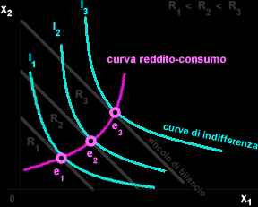

Curva reddito-consumo
La scelta del consumatore dipende dai suoi gusti, che determinano la forma delle curve di indifferenza, dal reddito a sua disposizione, e dal prezo dei beni. Se varia una di queste grandezze, assunte finora come date, muta il paniere ottimo.
In questo paragrafo si discutono gli effetti, sull'equilibrio del consumatore, di una variazione del suo reddito; prezzi e preferenze vengono supposti inalterati.
La curva reddito-consumo è una rappresentazione sul piano delle scelte del consumatore al variare del reddito. La scelta ottimale del consumatore è determinata dalla tangenza tra la curva di indifferenza ( preferenze del consumatore) e il suo vincolo di (scelte possibili). La variazione del reddito implica una traslazione del vincolo di bilancio, verso l'esterno in caso di aumento del reddito o verso l'interno in caso di riduzione del reddito. La pendenza della retta del vincolo di bilancio non muta al variare del reddito, essendo determinata da -p1/p2.
L'unione dei punti di scelta ottimale permette di tracciare la curva reddito-consumo. Tramite la curva reddito-consumo è possibile analizzare il cambiamento delle scelte di consumo a vari livello di reddito. Ad esempio, nel diagramma sovrastante il peso del bene X1 nel paniere di scelta cessa d'essere prevalente al crescere del reddito del consumatore da R1 a R3. La pendenza della curva reddito-consumo varia a seconda della tipologia dei beni. Nel caso precedente entrambi i beni sono beni normali in quanto la quantità domandata di ciascun bene aumenta con l'incremento del reddito.
Viceversa, i Beni inferiori sono beni la cui domanda diminuisce all'aumentare del reddito (v. Paradosso di Giffen). Tale circostanza dipende dal fatto che il maggior reddito a disposizione del consumatore verrà destinato all'acquisto di beni di qualità superiore.
Un tipico esempio di bene inferiore è costituito dalle baracche: un aumento del reddito personale si tradurrà non in un aumento della domanda di baracche ma nella richiesta di un appartamento. Nel caso in cui uno dei due beni fosse un bene inferiore, la curva reddito-consumo si presenterebbe nel seguente modo:
Come si può facilmente osservare, al crescere del reddito da R1 a R3 si riduce la quantità domandata del bene X1 nel paniere di scelta del consumatore mentre aumenta la quantità del bene X2. Ciò equivale a dire che il bene X1 è un bene inferiore (es. patate). Al crescere del reddito il consumatore ha già soddisfatto i bisogni di base (fame, sicurezza, ecc.) e può soddisfarli con beni sostituti più costosi di maggiore pregio e qualità (es. carne), puntando così a soddisfare i bisogni superiori seguendo la stessa logica descritta nella Piramide di Maslow. Il bene X2 è, invece, un bene normale poiché la quantità domandata aumenta con l'incremento del reddito.
Nota. Per rappresentare la curva reddito-consumo di un bene inferiore è necessario che l'altro sia un bene normale o, in ogni caso, non sia anch'esso un bene inferiore. Se fossero entrambi beni inferiori la quantità domandata di entrambi si ridurrebbe all'aumentare del reddito deve aumentare la domanda di almeno uno dei due beni. Per analizzare la natura di un bene e rappresentare sul piano soltanto la quantità domandata di un singolo bene al variare del reddito, senza considerare tutti gli altri beni del paniere di scelta del consumatore, è preferibile utilizzare la curva di Engel.
Curva di Engel
Dalla curva reddito-consumo si può ottenere la curva di Engel (Christian Engel 1821-1896, statistico tedesco) individuale del bene x che mette in relazione i vari livelli del reddito sull'asse delle ordinate, con il consumo di del bene x su quello delle ascisse.
La curva di Engel viene determinata a partire dalla curva reddito consumo.
Se un bene è normale, la sua domanda aumenterà all'aumentare del reddito e diminuirà al diminuire dello stesso. Come è facile intuire, le curve di Engel dei beni normali hanno pendenza positiva, mentre quelle dei beni inferiori hanno pendenza negativa.
Interessante è poi notare che, anche se per tutti i beni normali la quantità consumata cresce al crescere del reddito, il consumo di beni differenti cresce in maniera differente, tanto che possiamo distinguere tra varie tipologie.
Beni di prima necessità
La prima tipologia di bene normale che prendiamo in considerazione è quella dei beni di prima necessità, come ad es. il cibo. Quando il nostro reddito è basso, siamo costretti a dedicare gran parte di esso all'alimentazione: dopo tutto il nostro problema più assillante, in queste condizioni, è riuscire a mettere insieme il piatto a tavola. Quando però il reddito aumenta, aumenteremo anche la spesa per l'alimentazione (acquistandone una quantità maggiore e/o alimenti di migliore qualità), ma nel contempo cominceremo ad acquistare altri beni, che ora possiamo permetterci, dato il relativo livello di ricchezza raggiunto. Questo significa che per ogni euro in più di reddito ricevuto, via via che il nostro reddito aumenta, dedicheremo una parte sempre più piccola al consumo di beni di prima necessità: il loro consumo aumenta ma ad un tasso decrescente.
Engel elaborò una legge economica, passata alla storia con il nome di Legge di Engel in base alla quale i consumatori, soddisfatti i bisogni di prima necessità, destinano una frazione sempre più alta dell'aumento del proprio reddito all'acquisto di beni voluttuari, anche perché i beni necessari sono caratterizati da un'utilità maginale decrescente (infatti, pur essendo ricchissimo non comprerò altro pane se non quello necessario a soddisfare il mio fabbisogno primario).
Curva di Engel per beni di lusso
La seconda tipologia di beni normali da prendere in considerazione è quella dei beni di lusso.
Anche nel caso di beni di lusso, la curva di Engel ha una pendenza positiva. Quindi, al crescere del reddito cresce la quantità di bene domandata.
Tuttavia, in questo caso, ad aumenti costanti del reddito corrispondono aumenti via via crescenti della quantità di bene domandata. Al variare del reddito il consumo di x varia più che proporzionalmente. In altri termini, il consumo dei beni di lusso cresce, con l'incremento del reddito, a un tasso crescente.
Il caso del bene inferiore
Beni inferiori: Beni la cui domanda diminuisce all'aumentare del reddito (v. Paradosso di Giffen). Tale circostanza dipende dal fatto che il maggior reddito a disposizione del consumatore verrà destinato all'acquisto di beni di qualità superiore.
Un tipico esempio di bene inferiore è costituito dalle baracche: un aumento del reddito personale si tradurrà non in un aumento della domanda di baracche ma nella richiesta di un appartamento.
Nel caso di un bene inferiore la curva di Engel ha inclinazione negativa.
Paradosso di Giffen
Effetto riscontrato dallo statistico ed economista inglese Giffen secondo il quale un aumento del prezzo di un bene determina l'effetto paradossale di aumentarne la quantità richiesta. Tale effetto si manifeta con i beni inferiori. L'effetto può considerarsi paradossale in quanto contraddice palesemente la tradizionale legge della domanda (v.) secondo la quale un aumento del prezzo di un bene, a parità di reddito, produce una riduzione della quantità domandata.
In particolare l'economista inglese notava come nell'Inghilterra del XIX secolo, ogni aumento del prezzo del pane provocava un aumento della domanda dello stesso. Ciò era dovuto al fatto che le classi meno abbienti, per le quali questo alimento era vitale, in presenza di un aumento del prezzo del pane (e a parità di reddito monetario) erano costrette ad abbandonare l'acquisto di quei prodotti più costosi (ad esempio frutta) e meno essenziali. Con la somma risparmiata essi acquistavano maggiori quantità di pane. La riduzione del prezzo di questo bene di prima necessità avrebbe, però, quasi sicuramente determinato un effetto contrario paradossale; le classi sociali più povere, infatti, non avrebbero comprato una quantità maggiore di pane (come è implicito nella legge della domanda) ma avrebbero mantenuto costante il consumo di tale bene per acquistare prodotti più costosi.
In realtà l'effetto paradossale è soltanto apparente in quanto l'osservazione di Giffen presenta due vincoli limitativi:
il bene in questione è un c.d. bene inferiore (v.) cioè indispensabile per un minimo fabbisogno alimentare di alcune classi sociali;
il reddito di tale classe deve essere molto limitato, ragion per cui anche una piccola variazione del prezzo del bene indispensabile produce una notevole riduzione del potere d'acquito di tali classi.